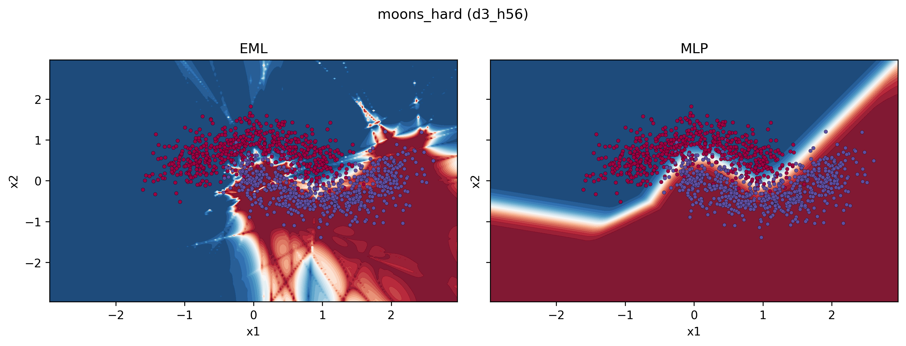
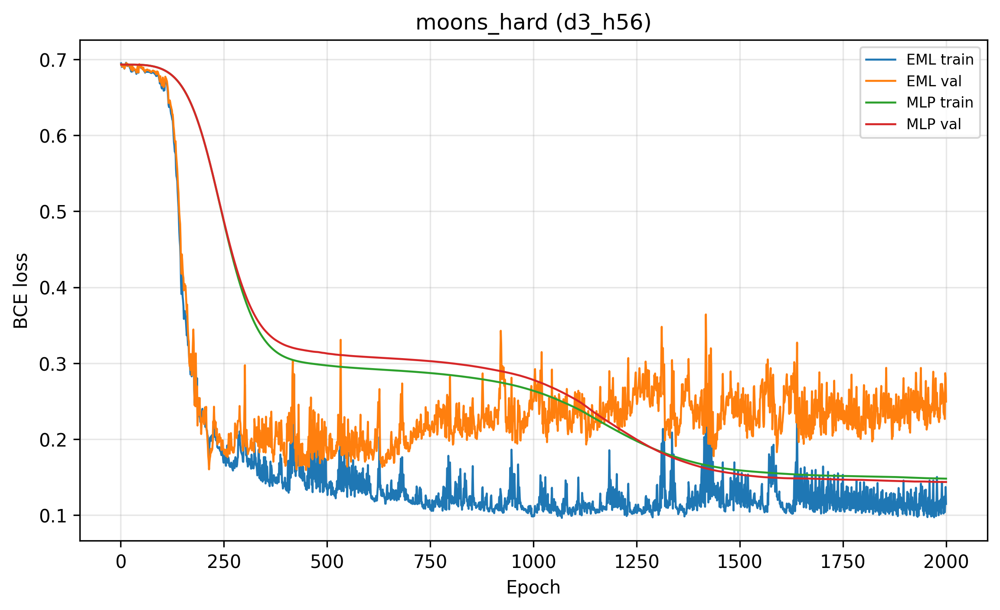
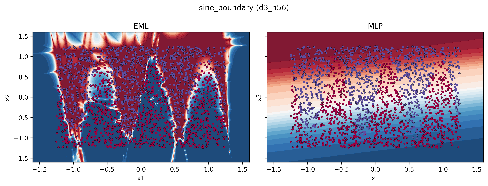
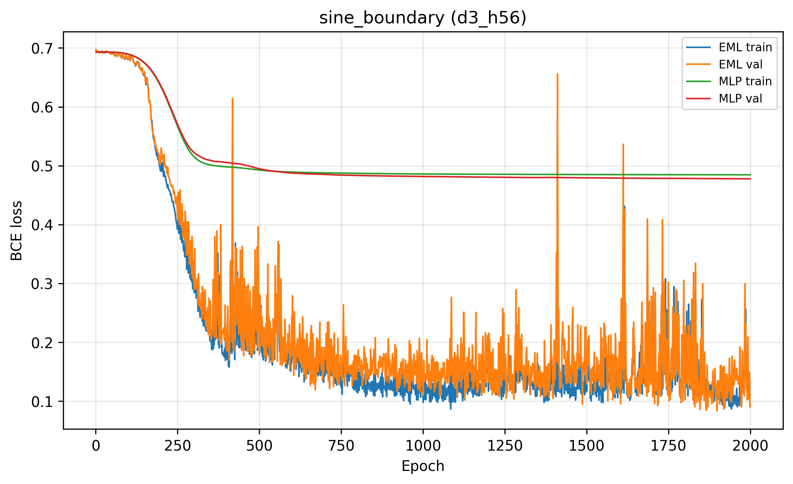
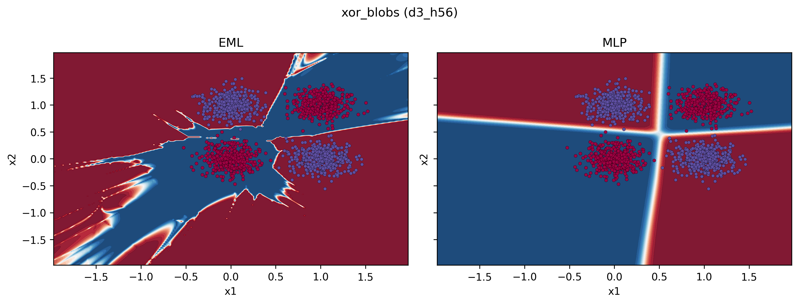
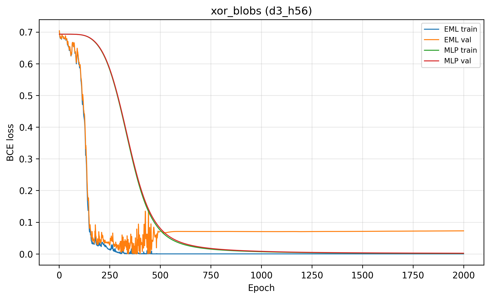

Validation summary
Gap = MLP val BCE − EML val BCE. Positive ⇒ EML lower validation loss. Rows are sorted by gap (EML-favourable first).
Loading results…
| Scenario | Epochs | Depth | Hidden | EML val loss | MLP val loss | Gap | EML val acc | MLP val acc |
|---|
Featured scenarios
moons_hard — decision

moons_hard — loss

sine_boundary — decision

sine_boundary — loss

xor_blobs — decision

xor_blobs — loss

All scenarios
Each card loads assets/<scenario>_decision.png and _loss.png produced by train_benchmarks (naming d3_h56_* flattened at site build).
Deploy
This folder is static: upload site/ to any static host (GitHub Pages,
Netlify, S3, nginx, etc.).
Local preview:
cd site && python -m http.server 8080
then open http://localhost:8080
Regenerate assets by re-running benchmarks from the EMLnet/ package root, then
re-copy PNGs and summary.json into site/assets and site/data/
(see site/README.md).